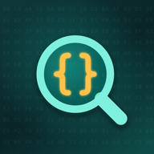

Privacy Policy
The short version
Skopo opens the files you choose and shows them on your phone. It never uploads a file, has no account, no server and no analytics of our own, and we (Aplogon) never receive, see or sell your files. Skopo keeps only your settings and a list of your recent files (their names and addresses, never their contents) on your phone. The free version shows ads from Google AdMob, which collects device identifiers and other data as described below.
Who we are
Skopo is made by Aplogon, an independent app developer based in Sri Lanka. Aplogon is responsible for this app and this policy. Privacy questions: apexfordinith@gmail.com.
Your files
Skopo has no permission to read your phone's storage. It sees a file only when you give it that one file: by choosing it in Android's file picker, by opening it with Skopo from another app (“Open with”), or by sharing it to Skopo. Android then lets Skopo read that file (and, when the app holding it allows, write to it). From the app holding the file Skopo receives the file's contents, its name, size and type, and an address for it (a content URI).
Skopo reads the file on your phone to show it: it checks its first bytes to tell what kind of file it is, and reads, parses and searches it in memory, a piece at a time for big files. What you see in a file is not stored by Skopo and is never sent anywhere. When you close the file, Skopo forgets its contents.
Text works the same way: when you tap Paste, Skopo reads the text on your clipboard (only then) and opens it like a file, and text another app shares to Skopo opens the same way. When you copy a value, a path, a line or a selection, Skopo puts it on your phone's clipboard, where other apps that can read the clipboard can see it.
Recent files
So you can reopen a file, Skopo keeps a list of up to 25 recent files in its private storage on your phone. For each file the list holds only its name and its address (content URI), never its contents. For files you chose in the file picker, and for some files other apps share, Android also remembers that Skopo may open the file again. Removing a file from the list (swipe it away, or Clear in Files or Settings › Clear Recent Files) gives up that access; Skopo never deletes or changes the file itself.
Saving, exporting and sharing
Skopo writes to a file only when you tap Save. You can replace the original (Skopo asks you to confirm first, and only where the app holding the file allows it; for byte edits it may write just the changed bytes), or save a new file wherever you choose in Android's file picker. Export works the same way, or through Android's share sheet. Nothing is ever written without you asking.
When you share a file, a converted file or a document's text, Skopo opens Android's share sheet and it goes only to the app or place you pick, which then handles it under its own policy. To share it, Skopo writes a copy to its private cache folder on your phone (in cache/share_plus), which stays there until the next time you share something from Skopo or until Android clears the cache. Shared files are not encrypted, so keep them somewhere safe. “Share Skopo” shares a short description with a link to Skopo on Google Play, and “Rate Skopo” opens Skopo's page on Google Play.
Your settings
Skopo stores your settings (the theme, text size, indentation, line wrapping, line numbers, hex bytes per row, the inspector's byte order), whether you have finished the introduction, how many times the app has been opened, whether Skopo Pro is active, and, for the free version's ads, when a full-screen ad was last shown and how many were shown today. These and the recent files list are kept only in Skopo's private storage on your phone, and nothing in them is sent to us or to anyone else.
If your phone's Android backup is turned on, Android may include Skopo's app data (your settings and the recent files list, with each file's name and address) in your own Google account backup so it can be restored on a new phone; that backup is managed by Google under your Google account settings. Your files' contents are never part of it, because Skopo doesn't store them.
Permissions
Skopo uses the internet only for ads and Google Play purchases. It does not ask for permission to use your storage, location, contacts, calendar, camera, microphone or notifications.
Advertising (free version)
The free version shows ads served by Google AdMob: a small ad card at the end of the Files tab, an ad card at the end of a file's File Info page, a full-screen ad now and then when you come back to Skopo's main screens (Files or Settings), and a short video ad when you choose to watch one to open one large file, save once or export once. No ad is placed inside a file's view, and no full-screen ad ever covers an open file, a sheet or a dialog, the introduction or the Skopo Pro page. Skopo asks Google only for ads suitable for general audiences and teens (rated PG or lower). To show and measure ads, and to prevent fraud and abuse, Google's ads SDK in Skopo collects your device's advertising ID and app set ID, your IP address (from which Google estimates your approximate location), information about how you use the app and interact with ads (such as app launches, ad views and taps), and diagnostic data about the SDK's performance and crashes. This information goes to Google, which may share it with its advertising partners; where a consent message is shown, it lists them. Ad requests never include your files, their names, your recent files or your settings.
Where the law requires it (the European Economic Area, the UK and Switzerland), Skopo uses Google's consent tool to ask for your choice before any ad is requested. If you decline personalised ads, you may still see ads that are not personalised; depending on your choices, these can still use your IP address and, where you allowed it, device identifiers for frequency capping, aggregated ad reporting and fraud prevention. The consent tool uses your IP address to work out which rules apply to you, and stores your choice on your phone.
In US states whose privacy laws give you the right to opt out of the sale or sharing of personal information for targeted advertising, you can opt out the same way. Where these choices apply to you, you can change them at any time in Settings › Ad Privacy Choices; the option appears only where the law requires it. You can also reset or delete your advertising ID in your phone's settings (Privacy › Ads, or Google › Ads on some phones).
Learn how Google uses information from apps that use its services: policies.google.com/technologies/partner-sites.
Skopo Pro removes all ads.
Purchases
Skopo Pro is sold through Google Play as a one-time purchase, and Google Play processes your payment under Google's own privacy policy. Google Play tells the app what your Google account has bought (a product ID, order number and purchase token) so Skopo can unlock Pro. Skopo keeps only whether Pro is active, which product unlocked it and when it last checked, on your phone, and re-checks with Google Play from time to time. We never receive your card or payment details.
What Aplogon receives
Aplogon has no server and never receives your files, their names, your recent files or your settings. We receive information only in these cases:
- If you email us from Settings › Contact Support, we get your email address, your message (and anything you attach), and the app version, Android version and language setting that Skopo adds at the bottom of the email (you can delete them before sending).
- When you buy Skopo Pro, Google Play gives us an order record (such as the order number, product, price, date and country).
- Google Play and AdMob give us statistics and crash reports about the app, which do not include your files or their names.
We use this only to provide support, handle purchases and improve the app, and we never sell it.
Data retention and deletion
Your settings and the recent files list stay on your phone until you change or clear them (Settings › Clear Recent Files) or uninstall Skopo, which removes everything it stores, including any shared copy in its cache. Your files stay wherever they are; files you saved, exported or shared stay wherever you put or sent them. If Android backup is on, a copy of Skopo's app data may stay in your Google account backup after you uninstall, and may be restored if you reinstall; Google manages that copy under your Google account's backup settings.
Aplogon never receives your files, so we have no copy to delete. If you email us, we keep your message only as long as needed to help you, and you can ask us to delete it. Purchase records are kept by Google Play under its own policies. Data collected by Google for ads is kept under Google's own policies; you can reset or delete your advertising ID in your phone's settings.
Security
Skopo's settings, recent files list and cache are kept in its private app storage, which other apps cannot read. Ad and Google Play requests travel over encrypted HTTPS (TLS) connections. Skopo opens files in its own viewers and never runs code from them.
Children
Skopo is meant for people aged 16 and over and is not directed to children. We do not knowingly collect personal information from anyone under 16, or under the minimum age that applies where they live. If you believe a child has sent us personal information, for example by email, write to apexfordinith@gmail.com and we will delete it.
Your choices
- Choose which files Skopo may open; remove any of them from Recents, or clear the list in Settings › Clear Recent Files.
- Save, export, share or copy only what you choose; Skopo asks before replacing a file.
- Change your ad privacy choices in Settings › Ad Privacy Choices (where the law requires the option), reset or delete your advertising ID in your phone's settings, or upgrade to Pro to remove ads.
If you are in the EEA, the UK or Switzerland
Aplogon is the controller for Skopo. Google is an independent controller for the ad data its SDK collects. Personalised ads, and storing or reading identifiers on your device for ads, rely on your consent, which you can withdraw at any time in Settings › Ad Privacy Choices. Ads that are not personalised, ad measurement and fraud prevention rely on legitimate interests: ads pay for the free version, and fraud prevention keeps them safe. We answer your emails and handle purchases to provide the service you asked for. Google may process ad data outside your country, including in the United States, with the safeguards described in Google's privacy policy.
You have the right to access, correct or delete your personal data, to restrict or object to its use, to data portability, and to complain to your local data protection authority. Ad data is held by Google, so requests about it are best made to Google at myaccount.google.com/data-and-privacy. For anything we hold, such as your emails, write to apexfordinith@gmail.com.
US state privacy rights
In the free version, Google's ads SDK collects these categories of personal information: identifiers (advertising ID, app set ID, IP address), internet or other electronic network activity (app and ad interactions, SDK diagnostics) and approximate location. They are disclosed to Google for advertising, ad measurement and fraud prevention. Some state laws treat this as a “sale” or “sharing” of personal information for targeted advertising. You can opt out in Settings › Ad Privacy Choices where the option is shown, by deleting your advertising ID in your phone's settings, or by upgrading to Skopo Pro, which shows no ads.
You can ask us what personal information we hold about you, or ask us to correct or delete it, by writing to apexfordinith@gmail.com. We will not treat you differently for using these rights. We do not knowingly sell or share the personal information of anyone under 16.
Changes and contact
If this policy changes we will update this page and its effective date. Questions: apexfordinith@gmail.com.